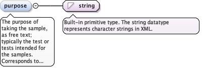

The design of the construction activity this sample is to be takenduring or from, for example cylinder sampling planned against acolumn installation. It is the planned counterpart ofdiggs:constructionActivityRef on a realized sampling activity, andcites a design, never a realized activity. Given by reference only.
The gml:identifier value of the referenced feature, as a fully qualifiedvalue. It gives an alternative to the gml:id in xlink:href for findingthe referenced feature, mainly to reference a feature by a globallyunique identifier and where naming conflicts occur with gml:id whenaccessing data in external files.
<element minOccurs="0" name="constructionActivityDesignRef" type="diggs:FeatureReferenceType"><annotation><appinfo source="urn:x-gml:targetElement">diggs:AbstractConstructionActivityDesign</appinfo><documentation>The design of the construction activity this sample is to be taken during or from, for example cylinder sampling planned against a column installation. It is the planned counterpart of diggs:constructionActivityRef on a realized sampling activity, and cites a design, never a realized activity. Given by reference only.</documentation></annotation></element>
The planned absolute location of the sample, in a real CRS. Use itonly where sampleScope does not apply because no source feature iscited, for example a grab sample at a known position. Where thesample is planned relative to a cited sampling feature, state theposition through sampleScope/samplingPosition(diggs:RelativeLocation), which carries no CRS. Do not use the twotogether.
<element minOccurs="0" name="samplingLocation" type="diggs:LocationPropertyType"><annotation><documentation>The planned absolute location of the sample, in a real CRS. Use it only where sampleScope does not apply because no source feature is cited, for example a grab sample at a known position. Where the sample is planned relative to a cited sampling feature, state the position through sampleScope/samplingPosition (diggs:RelativeLocation), which carries no CRS. Do not use the two together.</documentation></annotation></element>
<element minOccurs="0" name="sampleScope" type="diggs:SampleDesignScopePropertyType"><annotation><documentation>The population this sample design draws from, and how densely or in what pattern. See diggs:SampleDesignScopeType.</documentation></annotation></element>
The purpose of taking the sample, as free text; typically the testor tests intended for the samples. Corresponds todiggs:AbstractSamplingActivityType/purpose.
Diagram

Type
string
Properties
content
simple
minOccurs
0
Source
<element minOccurs="0" name="purpose" type="string"><annotation><documentation>The purpose of taking the sample, as free text; typically the test or tests intended for the samples. Corresponds to diggs:AbstractSamplingActivityType/purpose.</documentation></annotation></element>
The planned material class of the sample, for example soil, rock,grout or water. It corresponds to diggs:SampleType/sampleMatrix onthe as-built side. A designer often cannot say whether recoveredmaterial will be soil or rock; state the expected or required matrixwhere known. The dictionary carries coarse classes alongside finermaterial terms, so a plan can be as specific or as provisional asthe design stage allows. Use the DIGGS dictionary sampleMatrix.xmlfor the list of values.
<element minOccurs="0" name="sampleMatrix" type="gml:CodeType"><annotation><documentation>The planned material class of the sample, for example soil, rock, grout or water. It corresponds to diggs:SampleType/sampleMatrix on the as-built side. A designer often cannot say whether recovered material will be soil or rock; state the expected or required matrix where known. The dictionary carries coarse classes alongside finer material terms, so a plan can be as specific or as provisional as the design stage allows. Use the DIGGS dictionary sampleMatrix.xml for the list of values.</documentation></annotation></element>
For planned sampling of soil or rock, the means by which the sampleris planned to be inserted into the ground, for example pushed ordriven. Corresponds todiggs:AbstractSamplingActivityType/samplerInsertionMethod. Use theDIGGS dictionary samplerInsertionMethod.xml for the list of values.
<element minOccurs="0" name="samplerInsertionMethod" type="gml:CodeType"><annotation><documentation>For planned sampling of soil or rock, the means by which the sampler is planned to be inserted into the ground, for example pushed or driven. Corresponds to diggs:AbstractSamplingActivityType/samplerInsertionMethod. Use the DIGGS dictionary samplerInsertionMethod.xml for the list of values.</documentation></annotation></element>
The method the sample is planned to be collected by, inline or byreference. Corresponds todiggs:AbstractSamplingActivityType/samplingMethod. Repeat for eachmethod.
<element minOccurs="0" maxOccurs="unbounded" name="samplingMethod" type="diggs:SamplingMethodPropertyType"><annotation><documentation>The method the sample is planned to be collected by, inline or by reference. Corresponds to diggs:AbstractSamplingActivityType/samplingMethod. Repeat for each method.</documentation></annotation></element>
For planned aggregate activities that blend samples, such assoil-cement mixtures or a grout mix design via diggs:DesignGroutMix,the planned time to mix the sample together. Corresponds todiggs:AbstractSamplingActivityType/mixingTime.
<element minOccurs="0" name="mixingTime" type="diggs:TimeMeasureType"><annotation><documentation>For planned aggregate activities that blend samples, such as soil-cement mixtures or a grout mix design via diggs:DesignGroutMix, the planned time to mix the sample together. Corresponds to diggs:AbstractSamplingActivityType/mixingTime.</documentation></annotation></element>
<element minOccurs="0" name="plannedSampleWeight" type="diggs:ForceMeasureType"><annotation><documentation>The planned weight of the sample. Corresponds to diggs:SampleType/sampleWeight, so the planned and obtained sizes compare field for field.</documentation></annotation></element>
<element minOccurs="0" name="plannedSampleMass" type="diggs:MassMeasureType"><annotation><documentation>The planned mass of the sample. Corresponds to diggs:SampleType/sampleMass; sampling standards often specify a minimum sample size in mass.</documentation></annotation></element>
The planned volume of the sample. Corresponds todiggs:SampleType/sampleVolume. On diggs:DesignGroutMix it overlapsin meaning, not in role, withdiggs:DesignGroutMixType/theoreticalYield, the batch volume the mixformula computes to; both may be stated.
<element minOccurs="0" name="plannedSampleVolume" type="diggs:VolumeMeasureType"><annotation><documentation>The planned volume of the sample. Corresponds to diggs:SampleType/sampleVolume. On diggs:DesignGroutMix it overlaps in meaning, not in role, with diggs:DesignGroutMixType/theoreticalYield, the batch volume the mix formula computes to; both may be stated.</documentation></annotation></element>
The planned dimensions of the sample: diameter and length for a coresample (measured in the sampling direction), or height, width andlength for a block sample (sides normal to the sampling direction).Corresponds to diggs:SampleType/sampleDimensions.
<element minOccurs="0" name="plannedSampleDimensions" type="diggs:SampleDimensionsPropertyType"><annotation><documentation>The planned dimensions of the sample: diameter and length for a core sample (measured in the sampling direction), or height, width and length for a block sample (sides normal to the sampling direction). Corresponds to diggs:SampleType/sampleDimensions.</documentation></annotation></element>
Complex Type diggs:DesignSampleType
Namespace
http://diggsml.org/schemas/3
Annotations
Base type for sample designs. It mirrors the plannable content ofdiggs:AbstractSamplingActivityType, procedure and intent, and leaves out the resultsof recovery. Use diggs:DesignSample or a specialization such asdiggs:DesignGroutMix.
Database handle for the object. It is of XML type ID, so is constrained to beunique in the XML document within which it occurs. An external identifier for the object inthe form of a URI may be constructed using standard XML and XPointer methods. This is doneby concatenating the URI for the document, a fragment separator, and the value of the idattribute.
Source
<complexType name="DesignSampleType"><annotation><documentation>Base type for sample designs. It mirrors the plannable content of diggs:AbstractSamplingActivityType, procedure and intent, and leaves out the results of recovery. Use diggs:DesignSample or a specialization such as diggs:DesignGroutMix.</documentation></annotation><complexContent><extension base="diggs:AbstractSamplingDesignType"><sequence><element minOccurs="0" name="constructionActivityDesignRef" type="diggs:FeatureReferenceType"><annotation><appinfo source="urn:x-gml:targetElement">diggs:AbstractConstructionActivityDesign</appinfo><documentation>The design of the construction activity this sample is to be taken during or from, for example cylinder sampling planned against a column installation. It is the planned counterpart of diggs:constructionActivityRef on a realized sampling activity, and cites a design, never a realized activity. Given by reference only.</documentation></annotation></element><element minOccurs="0" name="samplingLocation" type="diggs:LocationPropertyType"><annotation><documentation>The planned absolute location of the sample, in a real CRS. Use it only where sampleScope does not apply because no source feature is cited, for example a grab sample at a known position. Where the sample is planned relative to a cited sampling feature, state the position through sampleScope/samplingPosition (diggs:RelativeLocation), which carries no CRS. Do not use the two together.</documentation></annotation></element><element minOccurs="0" name="sampleScope" type="diggs:SampleDesignScopePropertyType"><annotation><documentation>The population this sample design draws from, and how densely or in what pattern. See diggs:SampleDesignScopeType.</documentation></annotation></element><element minOccurs="0" name="purpose" type="string"><annotation><documentation>The purpose of taking the sample, as free text; typically the test or tests intended for the samples. Corresponds to diggs:AbstractSamplingActivityType/purpose.</documentation></annotation></element><element minOccurs="0" name="sampleMatrix" type="gml:CodeType"><annotation><documentation>The planned material class of the sample, for example soil, rock, grout or water. It corresponds to diggs:SampleType/sampleMatrix on the as-built side. A designer often cannot say whether recovered material will be soil or rock; state the expected or required matrix where known. The dictionary carries coarse classes alongside finer material terms, so a plan can be as specific or as provisional as the design stage allows. Use the DIGGS dictionary sampleMatrix.xml for the list of values.</documentation></annotation></element><element minOccurs="0" name="samplerInsertionMethod" type="gml:CodeType"><annotation><documentation>For planned sampling of soil or rock, the means by which the sampler is planned to be inserted into the ground, for example pushed or driven. Corresponds to diggs:AbstractSamplingActivityType/samplerInsertionMethod. Use the DIGGS dictionary samplerInsertionMethod.xml for the list of values.</documentation></annotation></element><element minOccurs="0" maxOccurs="unbounded" name="samplingMethod" type="diggs:SamplingMethodPropertyType"><annotation><documentation>The method the sample is planned to be collected by, inline or by reference. Corresponds to diggs:AbstractSamplingActivityType/samplingMethod. Repeat for each method.</documentation></annotation></element><element minOccurs="0" name="mixingTime" type="diggs:TimeMeasureType"><annotation><documentation>For planned aggregate activities that blend samples, such as soil-cement mixtures or a grout mix design via diggs:DesignGroutMix, the planned time to mix the sample together. Corresponds to diggs:AbstractSamplingActivityType/mixingTime.</documentation></annotation></element><element minOccurs="0" name="plannedSampleWeight" type="diggs:ForceMeasureType"><annotation><documentation>The planned weight of the sample. Corresponds to diggs:SampleType/sampleWeight, so the planned and obtained sizes compare field for field.</documentation></annotation></element><element minOccurs="0" name="plannedSampleMass" type="diggs:MassMeasureType"><annotation><documentation>The planned mass of the sample. Corresponds to diggs:SampleType/sampleMass; sampling standards often specify a minimum sample size in mass.</documentation></annotation></element><element minOccurs="0" name="plannedSampleVolume" type="diggs:VolumeMeasureType"><annotation><documentation>The planned volume of the sample. Corresponds to diggs:SampleType/sampleVolume. On diggs:DesignGroutMix it overlaps in meaning, not in role, with diggs:DesignGroutMixType/theoreticalYield, the batch volume the mix formula computes to; both may be stated.</documentation></annotation></element><element minOccurs="0" name="plannedSampleDimensions" type="diggs:SampleDimensionsPropertyType"><annotation><documentation>The planned dimensions of the sample: diameter and length for a core sample (measured in the sampling direction), or height, width and length for a block sample (sides normal to the sampling direction). Corresponds to diggs:SampleType/sampleDimensions.</documentation></annotation></element></sequence></extension></complexContent></complexType>